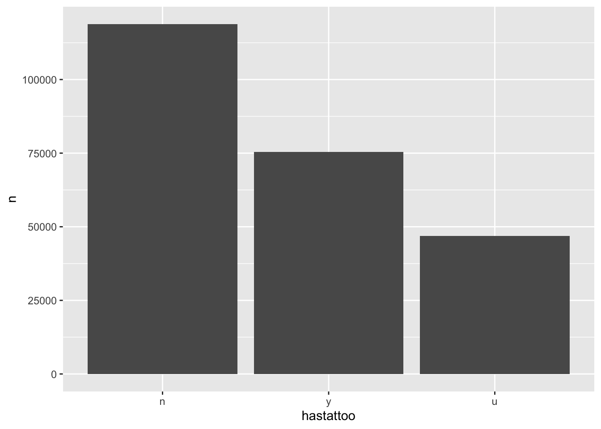
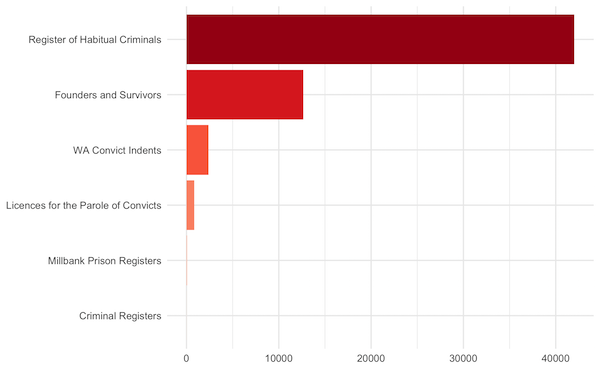
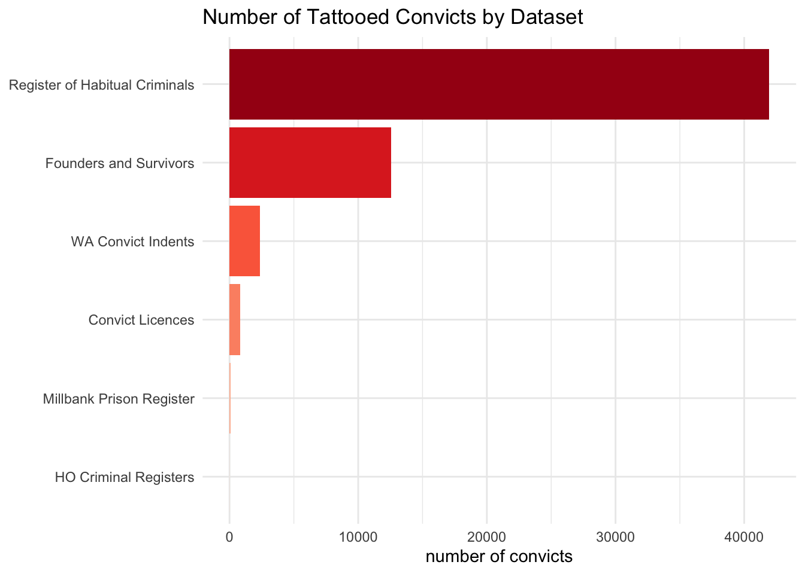
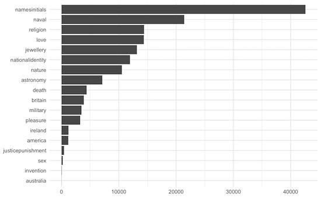
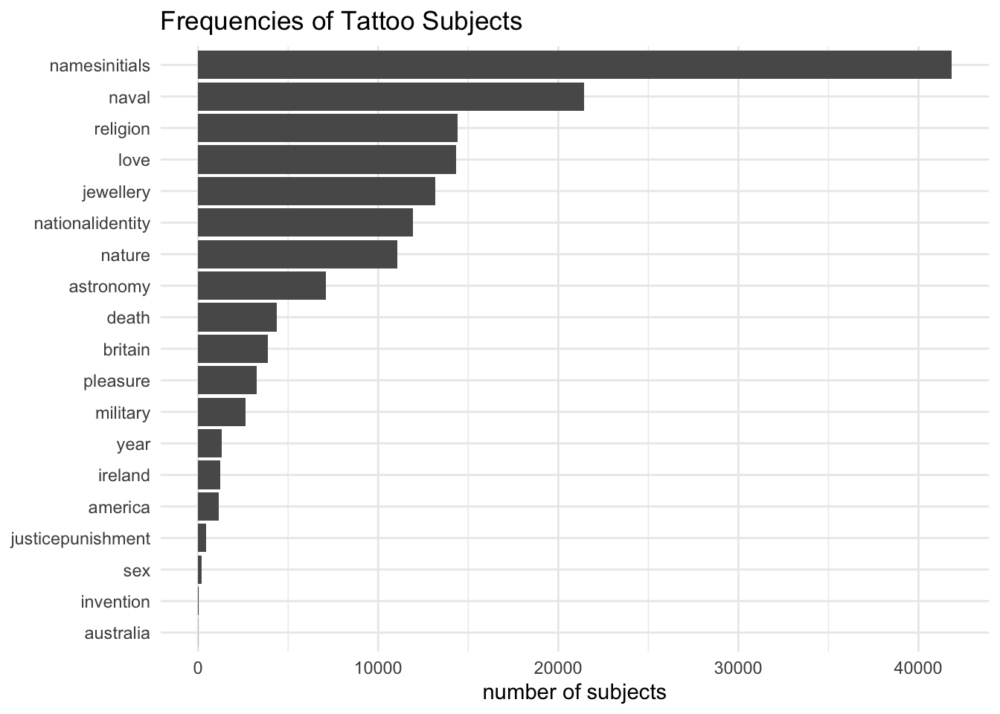

# the # is used to insert comments, so R will ignore them when it executes the code
# this helps to remind you what on earth you were trying to do, when you have to read your code again later
# or to enable other people reading your code to understand what you're trying to do
# the library() function is used to load packages that aren't part of the R core.
library(tidyverse)A first look at tattoos in the Digital Panopticon
Introduction
This post is an introduction to, firstly, the newly-released Tattoos in the Digital Panopticon Database, 1793-1925; and, secondly, to the software and code being used to analyse the data.
The dataset contains about 195,000 physical descriptions of convicts and prisoners. About 75,000 of these have been identified as containing tattoos, representing about 58,000 individuals (according to DP record linkage), and somewhere in the region of 350,000 discrete tattoos.
The dataset is derived from types of source material that many historians are more likely to encounter than the narrative and printed texts that are common in Digital Humanities research: local and central registers, files, forms and other early modern and modern archival records which are full of information that is neither free-flowing prose nor quite structured enough to be easy to extract computationally. Such data is still most likely to be compiled laboriously by hand.
We didn’t have the resources to do that, and this dataset simply can’t be as accurate as a manually-created one. Our goal was to make it good enough to use for large scale quantitative analysis, in which the imperfections taken as a whole are too small to significantly change results, and exploratory analyses that will help to provoke ideas and provide pointers to dig deeper into the mass of data.
We’ve made the data openly available - all the descriptions, not just those in which we identified tattoos, and including the transcriptions as well as the extracted tattoo data - for several reasons:
- transparency about the limitations of the data
- aiding others to improve on our work
- facilitate testing of the project’s research findings
- enable other re-uses and explorations of the data
The dataset also contains information that will aid users to locate the records at the Digital Panopticon website and from there, if desired, find digitised images of the originals (but note that in many cases the images are behind paywalls).
The background
The Digital Panopticon 1780-1925 is an ambitious large-scale digital history project to investigate the relative impacts of different types of punishment on criminal desistance, health outcomes, employment opportunities, and family life over the long term, using record linkage on more than 50 existing and newly-digitised datasets including the Proceedings of the Old Bailey, Founders and Survivors, commercially digitised genealogical data on criminals and prisoners in 19th-century Britain, and civil data on births, marriages and deaths.
The project’s central focus was on tens of thousands of Londoners sentenced to imprisonment or transportation at the Old Bailey between 1780 and 1885, though the nature of the data entailed collecting information on many more prisoners and convicts in Britain and Australia. Ultimately, the Digital Panopticon web resource, launched in September 2017, contained almost 4 million records dating from the mid 18th century to the early 20th century.
Many of these datasets contain information relating to the physical characteristics of individuals. DP’s main interest in this kind of data was for biometric analysis of heights and ages. However, some records also contain much more detailed but less structured descriptions of “distinguishing marks”, including scars from injuries, marks of past diseases and corporal punishments, and more voluntarily acquired markings.
Almost accidentally, DP created a huge database of tattooing practices in Britain and Australia from the end of the 18th century to the early 20th century, but one that was not easily usable because of the diverse, composite nature of the fields containing the material. The Criminal Tattoos project’s goal has been to find ways to make this information more accessible, and to explore ways of analysing and visualising it.
Purpose of the blog posts
This and subsequent blog posts aren’t primarily about the project’s research, which is introduced here and is in the process of being submitted to journals. Instead, I have three main goals.
One is to facilitate and encourage creative re-uses of the dataset (which is itself already the outcome of many re-uses, bringing together data created by several projects in different ways over almost two decades). I don’t think it’s enough to just release the data with technical documentation, and leave it at that. It isn’t a particularly easy dataset to work with, because of its size and complexity. So I’ll introduce some aspects of the data with examples of what I’ve been doing to inform the project research over the last 18 months.
I’ll also use it to document at least some of the visualisations that we’ve already shared at the DP visualisations gallery.
A second (but related) goal is to make historians more aware of different ways of using visualisation techniques, beyond the familiar simple bar or line graph, especially for uncovering complex patterns in multivariate data.
More specifically, I want to introduce the tools and methods I’ve been using to analyse and visualise the data, and to provide practical examples for historians, both for this and similar kinds of datasets. I hope to show how R can be an effective tool for working with complex historical datasets, and how it might be worth the time and effort needed to learn how to use it.
(This doesn’t mean I think R is “better” than, say, Python or another language. I do think programming languages tend to have different strengths, not least the communities that have grown around them and the resources those communities create for them. My opinion is that Python is especially strong for processing and analysing large corpora of relatively unstructured texts (and in fact the extraction/processing side of the project was done using Python); where R is particularly useful for analysing and visualising large and complex but more structured data. Moreover, I’m currently much more competent and comfortable using R and the limited time available for this project meant I needed that. So R was a better fit for this particular project.)
R, RMarkdown and the “Tidyverse”
All the posts are being written in RMarkdown, as notebooks that weave together narrative text and chunks of code. They are then turned into HTML webpages for the blog (but could alternatively be turned into Word docs, or PDFs, or presentation slides).
Thus, the posts will include plenty of code and some explanations. However, they aren’t intended to be step-by-step tutorials of which there are plenty online. I recommend these as good starting points:
- R Basics with Tabular Data (Programming Historian)
- Data Wrangling and Management in R (Programming Historian)
- (which can be followed by various other R lessons at the Programming Historian)
And this more comprehensive (free) guide book:
Nonetheless I think I should set out a few of the basic concepts here. I’m using a particular variant of the wider R ecosystem, which works by linking together a sequence of verbal commands with a “pipe” symbol %>%. The core functions - like “verbs” - for the work of tidying, reshaping, grouping and summarising data for quantitative analysis are:
- select() - specify columns in the data table to work with (useful if there are a lot of them!)
- filter() - limit analysis to specified rows of data
- arrange() - re-sort them
- mutate() - create new columns, by doing some operation on the existing columns
- summarise() - collapse many values down to a single summary value
- group_by() - group rows of data together in preparation for some further summarise/mutate command
- ..._join() - a set of verbs for linking related tables together
(I find this flavour of R particularly congenial because I came to the language from using MySQL, which operates in a similar way. Others are available.)
Some other R terminology:
- object: objects can be all sorts of things in R, from a single number to a string of characters to a data table to a nested list of things, and other highly specialised data formats; but the key feature is that they’ve been named and saved for re-use in a script, so you can for example avoid having to re-import a file every time you want to do something to it
- package: like many modern programming languages and software tools, R has a relatively limited core functionality (“base R”) which is then extended by third-party developers to provide convenient tools for particular uses. Most readers will be familiar with this concept even if they have different names in different tools - extensions, plugins, libraries, etc. In R packages is the usual term, often denoted by writing the name in {curly brackets}. (You can also get data packages which bundle up datasets in a convenient ready-made R format.)
The health warnings
Users of the data should be aware from the outset that the dataset is a very long way from perfect; extracting tattoos from the descriptions was a major challenge for a small project with limited funding. It is likely that many tattoos (especially the “long tail” of rare tattoo designs) have been missed, and conversely things that were not tattoos have been misidentified. The process aimed not simply to find tattoos but also to associate them with body locations, and this could also go wrong in various ways.
The extraction methodology is described in some detail on the DP website, so I’m not going to repeat it here. But this is the sort of thing the project had to grapple with (tattoo elements highlighted):
Crucifix above elbow Joint rt arm deep dimple on chin Scar near outer corner rt eye Moon & 7 stars JW mermaid anchor JC MD JD TD & Cannon (Prop) inside rt arm [James Rees, transported to Tasmania 1826]
Scar forehead, right eyebrow, right ear, left cheek, left side of nose, both sides of neck, lip, right arm elbow, right leg, right shoulder. I.L.M.K Liverpool E.R on right arm, ears pierced, lost several teeth. [Bridget Lacking, sentenced to penal servitude 1881]
scar right cheek and several back and loins ; female and barge left forearm ; half bracelet left wrist; birthniark left groin. [Henry Palmer, register of habitual criminals 1899 and 1901]
There are various problems. They’re a rather undifferentiated stream of small pieces of information, not in any fixed order, not all tattoos, and on occasion not actually about physical characteristics at all. Punctuation is unreliable, if it’s used at all. Abbreviations (such as “r” or “rt” for right and of course “&” for and) are very common and also quite variable. There can, of course, also be transcription errors.
If a person had several tattoos on one part of the body, they’d usually be grouped together, so attaching a design to the right location is also not a simple exercise (oh, and the body part might sometimes be written before the tattoos, rather than afterwards as in these examples).
Even after isolating tattoos from other strings of text, it often isn’t easy to define a single “tattoo”. You need to know that “Moon & 7 stars” is a religious symbol and so probably not two separate tattoos. It’s one of many phrases that have been identified as such. But what about something like “female and barge”? This might have been something like a picture of a woman on a barge or might be two separate tattoos “a woman” and “a barge”; in the data it’s the latter. There’s no way we could identify every possible phrase or combination of things that were originally a single tattoo design.
And it must be emphasised that in the vast majority of cases we have no idea what the tattoos actually looked like. (In a very few cases the original records contain tiny sketched drawings of the tattoos, which have been transcribed as text if they could be interpreted.) The data is entirely based on written descriptions, written down by many different officials over a long period of time, with undoubtedly hugely varying degrees of diligence and competence.
The convict descriptions data
The dataset contains two CSV files. Here I’m focusing on convict_descriptions, which contains 241207 rows of data. The second, convict_description_segments has more detailed information about the bodily locations of tattoos; I’ll get to that in a later post.
The first thing to do is load the R packages needed for analysis using the library() function. For now, I just want one, {tidyverse}, though that’s really a big convenience package of related sub-packages.
Next, import the data (with the read_csv() function). (An important principle here is that you import a copy of your data and then work with it entirely inside R; you don’t do anything to the original data file.)
# <- is used to create a new object
descriptions_data <-
read_csv(here::here("_data", "convict_descriptions.2020-12-17.csv"), guess_max = 100000)Now I can take a glimpse() at it: there is a lot of stuff in there. 42 columns of data!
descriptions_data %>%
glimpse()Rows: 241,207
Columns: 42
$ subrecordid <chr> "cin77589", "cin77590", "cin77591", "…
$ recordid <chr> "cin77589", "cin77590", "cin77591", "…
$ life_id <chr> "cin77589", "cin77590", "cin77591", "…
$ descyear <dbl> 1850, 1850, 1850, 1850, 1850, 1850, 1…
$ dataset <chr> "cin", "cin", "cin", "cin", "cin", "c…
$ hastattoo <chr> "y", "y", "n", "y", "n", "n", "n", "n…
$ haspunishmentmark <chr> "n", "n", "n", "n", "n", "n", "n", "n…
$ desc_count <dbl> 1, 1, 1, 1, 1, 1, 1, 1, 1, 1, 1, 1, 1…
$ designs <chr> "anchor|dog|moon|man and woman|diamon…
$ writtenwords <chr> "IMB|ST", "JP|CPEP", NA, "EM|LARK", N…
$ writtenyears <chr> "1838", NA, NA, NA, NA, NA, NA, NA, N…
$ punishmentmarks <chr> NA, NA, NA, NA, NA, NA, NA, NA, NA, N…
$ body <chr> "right arm|left arm", "right hand|rig…
$ digest <chr> "[right arm : man and woman|sun|dog|S…
$ subjects <chr> "love year astronomy namesinitials pl…
$ url <chr> "https://www.digitalpanopticon.org/li…
$ fulldescription <chr> "Man and woman, 2 stars, 1 dog, ST 18…
$ given <chr> "Samuel", "John", "William", "John", …
$ surname <chr> "Scattergood", "Patience", "Branson",…
$ gender <chr> "m", "m", "m", "m", "m", "m", "m", "m…
$ born <dbl> 1814, 1820, 1817, 1820, 1824, 1826, 1…
$ transported <chr> "yes", "yes", "yes", "yes", "yes", "y…
$ ticket_of_leave <chr> "no", "no", "no", "no", "no", "no", "…
$ penalservitude <chr> "no", "no", "no", "no", "no", "no", "…
$ granted_prison_license <chr> "no", "no", "no", "no", "no", "no", "…
$ married <chr> "unknown", "unknown", "unknown", "unk…
$ insane <chr> "no", "no", "no", "no", "no", "no", "…
$ in_hulks <chr> "unknown", "unknown", "unknown", "unk…
$ religion <chr> NA, NA, NA, NA, NA, NA, NA, NA, NA, N…
$ religion_category <chr> NA, NA, NA, NA, NA, NA, NA, NA, NA, N…
$ occupation <chr> NA, NA, NA, NA, NA, NA, NA, NA, NA, N…
$ occupation_top_50 <chr> NA, NA, NA, NA, NA, NA, NA, NA, NA, N…
$ hisco <chr> NA, NA, NA, NA, NA, NA, NA, NA, NA, N…
$ place_of_birth <chr> NA, NA, NA, NA, NA, NA, NA, NA, NA, N…
$ ship <chr> "scindian", "scindian", "scindian", "…
$ earliest_trial_offence_category <chr> NA, NA, NA, NA, NA, NA, NA, NA, NA, N…
$ earliest_trial_sentence_category <chr> NA, NA, NA, NA, NA, NA, NA, NA, NA, N…
$ latest_trial_offence_category <chr> NA, NA, NA, NA, NA, NA, NA, NA, NA, N…
$ latest_trial_sentence_category <chr> NA, NA, NA, NA, NA, NA, NA, NA, NA, N…
$ trials <dbl> 0, 0, 0, 0, 0, 0, 0, 0, 0, 0, 0, 0, 0…
$ earliest_trial <dbl> 0, 0, 0, 0, 0, 0, 0, 0, 0, 0, 0, 0, 0…
$ latest_trial <dbl> 0, 0, 0, 0, 0, 0, 0, 0, 0, 0, 0, 0, 0…That’s because, as well as the descriptions and tattoos, we included various pieces of information about the individuals drawn from the DP database. Very often, this has come from the same record as the description (if a record was detailed enough to contain physical descriptions, it probably also had quite a lot of other personal information). Some of it, on the other hand, is drawn from a larger life archive of linked records for an individual. (You can read the dataset documentation for more detail.) I’m going to ignore most of it in this post. But at least a few explanations are in order now.
identifiers
There are three ID columns, all based on Digital Panopticon’s own IDs. Generally you’ll only need to work with two of them.
subrecordidis the unique identifier for each record in the tablelife_idis the ID for a person, more precisely what DP calls a “life archive”, which links together all the records for the same individual (we hope; and in practice, we have only a single record for many individuals).
It can be quite important to bear in mind the distinctions between people, records, descriptions and tattoos in the data. One record = one row in the table. A person can have multiple records, not all of which contain a description, and descriptions don’t all contain any tattoos.
(The third ID column is recordid and this is nearly - but not quite - always identical to subrecordid. You’re very unlikely to need it. The reason it exists separately is because some records have come from complex relational databases in which an individual could have several description records, from different tables. Thus the recordid is the ID for that database record as a whole, whereas subrecordid gives each of the descriptions a unique identifier.)
So, how many individual people (according to DP’s record linkage) and how many records in total are there in the dataset?
descriptions_data %>%
# n_distinct() is a function to count *unique* values; n() counts *all* values
summarise(n_life_id = n_distinct(life_id),
n_total = n()
)# A tibble: 1 × 2
n_life_id n_total
<int> <int>
1 193460 241207DP datasets
The column dataset is the short code for each… errmmm… dataset in the… errrmmm… dataset. (Perhaps we didn’t think some of the naming through as well as we could have done.) In fact this refers to the datasets in the Digital Panopticon. Just to confuse everyone a bit further, they’re grouped slightly differently here, so we’ve got 8 datasets where there are only six in DP itself.
descriptions_data %>%
distinct(dataset) %>%
arrange(dataset)# A tibble: 8 × 1
dataset
<chr>
1 cin
2 fas
3 fas_pgo
4 hcr
5 mpr
6 pld
7 rhc
8 tlm In DP, fas + fas_pgo are treated as a single dataset, as are pld + tlm. The full names are in the Tattoos database documentation, though I’ll be coming back to them briefly before the end of the post.
How many descriptions are there in each dataset? For this I need to use group_by(), to group together rows from the same dataset, before I can summarise().
descriptions_data %>%
group_by(dataset) %>%
summarise(n_records = n()) %>%
ungroup()# A tibble: 8 × 2
dataset n_records
<chr> <int>
1 cin 9719
2 fas 76830
3 fas_pgo 10587
4 hcr 12
5 mpr 914
6 pld 882
7 rhc 135996
8 tlm 6267But I can also - and most often do because it’s shorter and I’m lazy - do exactly the same thing with another handy function, count(). (sort=TRUE is ordering the results by count rather than alphabetically.)
descriptions_data %>%
count(dataset, name="n_records", sort=TRUE)# A tibble: 8 × 2
dataset n_records
<chr> <int>
1 rhc 135996
2 fas 76830
3 fas_pgo 10587
4 cin 9719
5 tlm 6267
6 mpr 914
7 pld 882
8 hcr 12They vary somewhat in size!
tattoos
There are nine columns related to the actual descriptions and tattoos extracted from them.
hastattoodesignswrittenwordswrittenyearsbodydigestsubjectsfulldescriptiondesc_count
hastattoo tells you a) whether there is text in the description field (“u” means that it’s blank) and b) whether we identified any tattoos in the description if present (“y” for yes; “n” for no).
descriptions_data %>%
count(hastattoo)# A tibble: 3 × 2
hastattoo n
<chr> <int>
1 n 118850
2 u 46909
3 y 75448And I can quickly plot that…
descriptions_data %>%
count(hastattoo) %>%
mutate(hastattoo = fct_relevel(hastattoo, "n", "y")) %>%
ggplot(aes(x=hastattoo, y=n)) +
geom_col()
desc_count is the number of separate records for the individual person to whom the record belongs. Out of curiosity, how many individuals have more than one record?
descriptions_data %>%
filter(desc_count>1) %>%
summarise(n=n_distinct(life_id))# A tibble: 1 × 1
n
<int>
1 24127I don’t tend to use desc_count, because I can calculate it for myself using life_id. But it’s quite handy for some questions.
What’s the top number of records for one individual?
descriptions_data %>%
count(life_id) %>%
top_n(1, n)# A tibble: 1 × 2
life_id n
<chr> <int>
1 fas2916 50How many records do most individuals have?
descriptions_data %>%
distinct(life_id, desc_count) %>%
count(desc_count, name="n_records", sort = TRUE) %>%
filter(desc_count<=10)# A tibble: 10 × 2
desc_count n_records
<dbl> <int>
1 1 169333
2 2 14009
3 3 4981
4 4 2244
5 5 1201
6 6 670
7 7 368
8 8 204
9 9 129
10 10 82How many records containing descriptions do most have?
descriptions_data %>%
filter(hastattoo !="u") %>%
# filter(!is.na(fulldescription)) would give the same result
distinct(life_id, desc_count) %>%
count(desc_count, name="n_records_with_desc", sort = TRUE) %>%
filter(desc_count<=10)# A tibble: 10 × 2
desc_count n_records_with_desc
<dbl> <int>
1 1 129122
2 2 13525
3 3 4907
4 4 2222
5 5 1192
6 6 664
7 7 364
8 8 204
9 9 129
10 10 82How many records containing tattoos?
descriptions_data %>%
filter(hastattoo =="y") %>%
# filter(!is.na(fulldescription)) would give the same answer
distinct(life_id, desc_count) %>%
count(desc_count, name="n_records_with_tattoos", sort = TRUE) %>%
filter(desc_count<=10)# A tibble: 10 × 2
desc_count n_records_with_tattoos
<dbl> <int>
1 1 45363
2 2 6570
3 3 2738
4 4 1313
5 5 728
6 6 423
7 7 224
8 8 122
9 9 81
10 10 55subjects refers to a set of broad categories for tattoos (eg “nationalidentity” or “pleasure”); they’re a bit different from the rest in that project staff manually decided on the assignment of subjects to tattoo designs. You should be aware that it’s a summary of all the subjects for the description, not just for a single tattoo, and the column can contain a list of several subjects.
fulldescription is the original transcription of the description; designs, writtenwords and writtenyears are tattoo classifications; body and digest both relate to the location of tattoos on the body.
Finally, there are various pieces of demographic and offending history (eg gender, birth place) drawn from the DP records.
Two visualisations
I want to finish this post by reproducing two visualisations I made for the project’s page at DP.
First, there was a bar chart of the number of tattooed people per dataset:

The steps for this are as follows
- filter to use only descriptions with tattoos
- recode the dataset names where needed before grouping them
- count unique life ids (so I get the number of people, not the number of descriptions)
- make nice labels
- make the chart
descriptions_filter_mutate_group_summarise <-
descriptions_data %>%
filter(hastattoo=="y") %>%
# case_when() enables you to change data depending on specified conditions
mutate(dataset = case_when(
dataset =="tlm" ~ "pld", # if the dataset = tlm, change to pld (ie, merging them together)
dataset =="fas_pgo" ~ "fas", # change fas_pgo to fas
TRUE ~ dataset # otherwise, leave unchanged
)) %>%
group_by(dataset) %>%
summarise(n = n_distinct(life_id)) %>%
ungroup()
descriptions_filter_mutate_group_summarise %>%
arrange(-n)# A tibble: 6 × 2
dataset n
<chr> <int>
1 rhc 41948
2 fas 12538
3 cin 2381
4 pld 849
5 mpr 68
6 hcr 12Now the list of the dataset names for the labels.
dataset_labels <- c("HO Criminal Registers", "Millbank Prison Register", "Convict Licences", "WA Convict Indents", "Founders and Survivors", "Register of Habitual Criminals")
dataset_labels[1] "HO Criminal Registers" "Millbank Prison Register"
[3] "Convict Licences" "WA Convict Indents"
[5] "Founders and Survivors" "Register of Habitual Criminals"To make the chart I use a package called {ggplot2} (which is included in the Tidyverse so I don’t need to load it separately). ggplot is advertised as “a grammar of graphics”, which should give a sense of how it works - rather like Tidyverse R as a whole. The different elements or layers of a chart are coded in separate steps, including
- geom_ to set the type of chart (bar, line, dot, etc)
- scale_ to handle axis and legend formatting, labelling and so on
- facet_ to split a chart into subcharts (aka “small multiples”)
- theme_ provides some convenient packages for overall aesthetics
descriptions_filter_mutate_group_summarise %>%
mutate(dataset = fct_reorder(dataset, n)) %>% # put the bars in the order I want in the chart
ggplot(aes(x=dataset, y=n, fill=dataset)) + # set up the data for ggplot
geom_col(show.legend = FALSE) + # draw a bar chart
coord_flip() + # make the bars horizontal (some of the labels are quite long and it looks better)
scale_fill_brewer(palette = "Reds") + # add some colours to the bars; purely cosmetic here
scale_x_discrete(labels=dataset_labels) + # add the labels
theme_minimal() +
labs(y="number of convicts", x=NULL, title="Number of Tattooed Convicts by Dataset") # titles 
The second bar chart showed the frequencies of tattoo subjects.

This will be quite similar to the first chart, but the subjects column can contain several subjects, not just one.
descriptions_data %>%
filter(hastattoo=="y") %>%
# not all tattoos have subjects assigned; filter out the empty ones
filter(!is.na(subjects)) %>%
select(subjects) %>%
# just get the first six rows for a quick look
head() # A tibble: 6 × 1
subjects
<chr>
1 love year astronomy namesinitials pleasure naval
2 namesinitials
3 namesinitials naval
4 namesinitials
5 love naval religion
6 jewellery So I need to reshape the data so there’s just one subject per line before counting them; I’ll do this with a function called unnest_tokens() from the excellent {tidytext} package.
So, the steps for this one:
- get descriptions with tattoos only
- filter out those without any subjects assigned
- separate out lists of subjects into one subject per line
- get the summary counts
library(tidytext)
descriptions_subjects_tokenised <-
descriptions_data %>%
filter(hastattoo=="y", !is.na(subjects)) %>%
select(subrecordid, subjects) %>%
unnest_tokens(subject, subjects) %>%
count(subject, sort=TRUE)
descriptions_subjects_tokenised# A tibble: 19 × 2
subject n
<chr> <int>
1 namesinitials 41832
2 naval 21417
3 religion 14412
4 love 14342
5 jewellery 13154
6 nationalidentity 11948
7 nature 11082
8 astronomy 7113
9 death 4366
10 britain 3879
11 pleasure 3237
12 military 2628
13 year 1295
14 ireland 1211
15 america 1165
16 justicepunishment 439
17 sex 205
18 invention 49
19 australia 10And now to draw the chart:
descriptions_subjects_tokenised %>%
mutate(subject = fct_reorder(subject, n)) %>%
ggplot(aes(subject, n)) +
geom_col() +
coord_flip() +
theme_minimal() +
labs(y = "number of subjects", x = NULL, title="Frequencies of Tattoo Subjects")